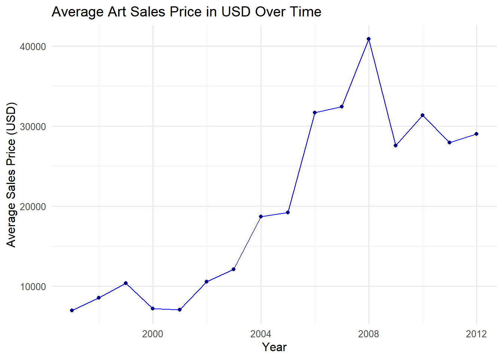
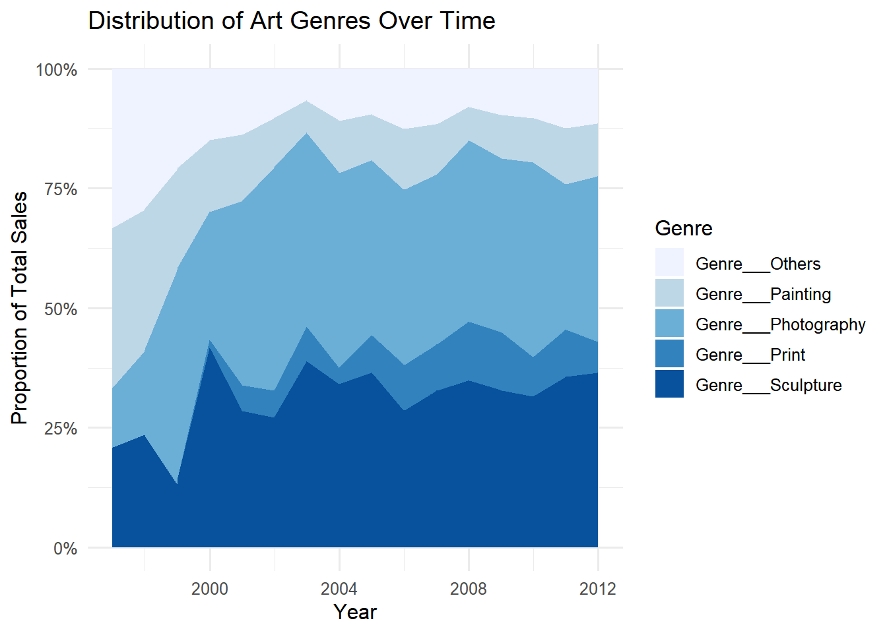
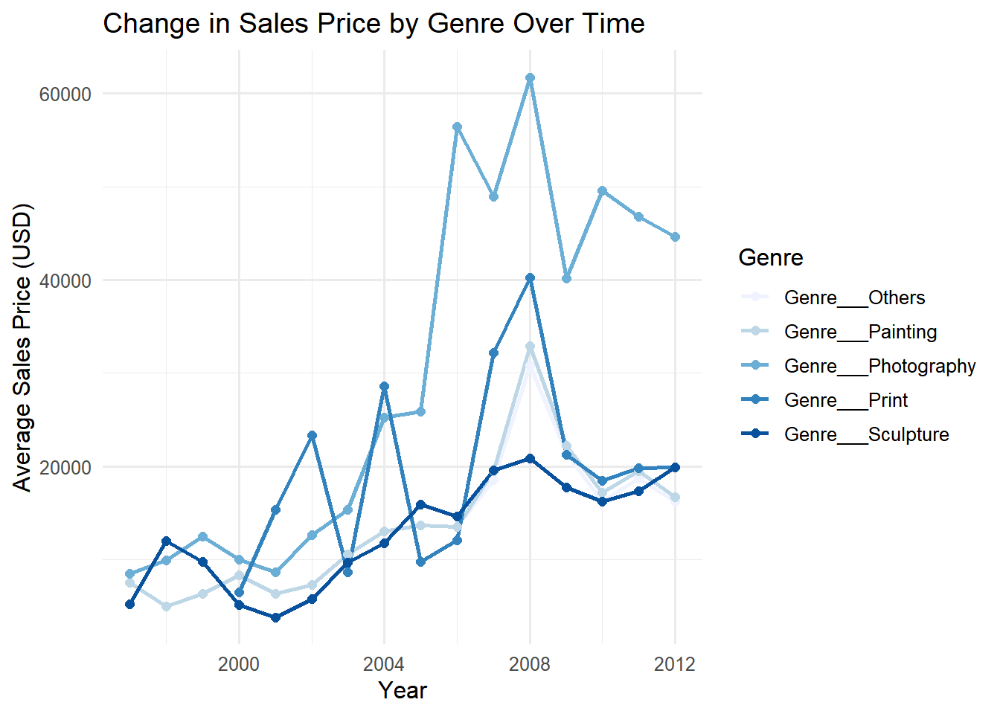

# A tibble: 3 × 3
name mean_departure_delay median_departure_delay
<chr> <dbl> <dbl>
1 Newark Liberty Intl 15.1 -1
2 John F Kennedy Intl 12.1 -1
3 La Guardia 10.3 -3
Now, we’ll calculate the mean and median arrival delays in a similar manner and exclude airports with fewer than 10 flights.
To find the model with the fastest average speed, we can calculate speed as distance / (air_time / 60), converting airtime to hours. After calculating average speed for each tailnum, we can join with planes to get the model.
This is dlnm 2.4.7. For details: help(dlnm) and vignette('dlnmOverview').
# Load the Chicago NNMAPS datadata("chicagoNMMAPS", package ="dlnm")nnmaps <- chicagoNMMAPS# Define the get_temp functionget_temp <-function(month, year, data, celsius =FALSE, average_fn = mean) {# Sanitize inputif (!is.numeric(month) &&!is.character(month)) {stop("Month must be a numeric (1-12) or a character string.") }# Convert month to numeric if it's a stringif (is.character(month)) { month_num <-match(tolower(month), tolower(c(month.abb, month.name)))if (!is.na(month_num) && month_num >12) { month <- month_num -12# Adjust for full month names } else { month <- month_num }if (is.na(month)) {stop("Invalid month name. Must be a valid abbreviation (e.g., 'Jan') or full name (e.g., 'January').") } }# Validate month is numeric and within rangeif (!is.numeric(month) || month <1|| month >12) {stop("Invalid month. Must be between 1 and 12.") }if (!is.numeric(year) ||length(year) !=1) {stop("Year must be a single numeric value.") }# Filter data for the specified month and year result <- data %>%filter(month == month & year == year) %>%summarize(avg_temp =average_fn(as.numeric(as.factor(temp)))) %>%pull(avg_temp)# Convert to Celsius if requestedif (celsius) { result <- (result -32) * (5/9) # Fahrenheit to Celsius conversion }return(result)}
Now let’s test the output of this function.
# Example evaluationsprint(get_temp("Apr", 1999, data = nnmaps))
[1] 115.3987
print(get_temp("Apr", 1999, data = nnmaps, celsius =TRUE))
[1] 46.33262
print(get_temp(10, 1998, data = nnmaps, average_fn = median))
[1] 117
As 13 is an invalid input of month, the code below should report an error.
print(try(get_temp(13, 1998, data = nnmaps))) # Should produce an error
Error in get_temp(13, 1998, data = nnmaps) :
Invalid month. Must be between 1 and 12.
[1] "Error in get_temp(13, 1998, data = nnmaps) : \n Invalid month. Must be between 1 and 12.\n"
attr(,"class")
[1] "try-error"
attr(,"condition")
<simpleError in get_temp(13, 1998, data = nnmaps): Invalid month. Must be between 1 and 12.>
print(get_temp(2, 2005, data = nnmaps))
[1] 115.3987
print(get_temp("November", 1999, data = nnmaps, celsius =TRUE,average_fn =function(x) { x %>%sort() -> x x[2:(length(x) -1)] %>%mean() %>%return() }))
[1] 46.33629
Problem 3
a
To analyze how sales prices have changed over time, a line plot of the average sales price per year would be informative. This approach will show trends, outliers, and general patterns.
# Load the datasetdf <-read.csv("df_for_ml_improved_new_market.csv")# Calculate mean sales price per yeardf_yearly <- df %>%group_by(year) %>%summarize(avg_price_usd =mean(price_usd, na.rm =TRUE))# Plot average sales price over timeggplot(df_yearly, aes(x = year, y = avg_price_usd)) +geom_line(color ="blue") +geom_point(color ="darkblue") +labs(title ="Average Art Sales Price in USD Over Time",x ="Year",y ="Average Sales Price (USD)" ) +theme_minimal(base_size =12)

In the first graph, prior to 2001, the price changes were relatively small. However, after 2001, there was a rapid increase in prices, particularly between 2005 and 2006, when the price surged by more than $10,000. A significant drop in prices occurred between 2008 and 2009, followed by a period of relative stability, with prices stabilizing around $30,000.
b
To assess if the distribution of genres changes over the years, a stacked area plot will show proportions of each genre per year. This visualization highlights changes in the relative frequency of each genre.
# Reshape the data to gather genre countsdf_genre_year <- df %>%pivot_longer(cols =starts_with("Genre___"),names_to ="genre",values_to ="count" ) %>%group_by(year, genre) %>%summarize(count =sum(count, na.rm =TRUE), .groups ="drop")blue_colors <- scales::brewer_pal(palette ="Blues")(5)# Plot genre distribution over timeggplot(df_genre_year, aes(x = year, y = count, fill = genre)) +geom_area(position ="fill") +scale_fill_manual(values = blue_colors) +labs(title ="Distribution of Art Genres Over Time",x ="Year",y ="Proportion of Total Sales",fill ="Genre" ) +scale_y_continuous(labels = scales::percent) +theme_minimal(base_size =12)

In the second graph, before the year 2000, the largest market share was held by painting. After that, photography emerged as the dominant genre, followed by sculpture. Since then, the market shares of these genres have remained relatively stable, with no significant changes observed.
c
To see how genre influences the sales price over time, a line plot of the average sales price for each genre can reveal genre-specific trends. Here, faceting can separate genres for easier comparison.
# Calculate mean sales price per year for each genredf_genre_price <- df %>%pivot_longer(cols =starts_with("Genre___"),names_to ="genre",values_to ="is_genre" ) %>%filter(is_genre ==1) %>%group_by(year, genre) %>%summarize(avg_price_usd =mean(price_usd, na.rm =TRUE), .groups ="drop")# Create a blue color gradient for linesline_colors <- scales::brewer_pal(palette ="Blues")(5)# Plot average sales price over time for all genres in one plotggplot(df_genre_price, aes(x = year, y = avg_price_usd, color = genre)) +geom_line(size =1) +# Adjust line size for visibilitygeom_point(size =2) +# Add points for emphasisscale_color_manual(values = line_colors) +# Apply blue colors to lineslabs(title ="Change in Sales Price by Genre Over Time",x ="Year",y ="Average Sales Price (USD)",color ="Genre" ) +theme_minimal(base_size =12) +theme(legend.position ="right") # Place legend on the right for better visibility
Warning: Using `size` aesthetic for lines was deprecated in ggplot2 3.4.0.
ℹ Please use `linewidth` instead.

Overall, the third graph indicates that average prices remained relatively stable before 2000. From 2000 to 2008, there was a significant increase in prices. After the sharp decline in prices between 2008 and 2009, the average prices stabilized. Among the genres, photography had the highest prices, while sculpture exhibited the lowest and most stable prices. Additionally, print prices showed the most fluctuations over time.